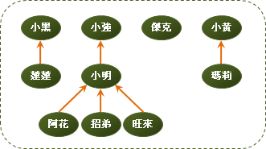
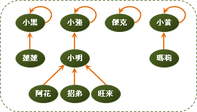

Disjoint Sets
程度★ 難度★
Disjoint Sets
「互斥集」的意思是一堆集合們，大家擁有的元素都不相同，也就是說這些集合們之間都沒有交集。
A = {1, 3, 7, 8}
B = {4, 5}
C = {2}
A、B、C構成Disjoint sets。
D = {1, 2, 3}
A、B、C、D不是Disjoint sets。
舉例來說，有十個學生，要製作分組報告，分成四組，這四組就是Disjoint sets。
甲君、乙君、丙君、丁君、戊君、己君、庚君、辛君、壬君、癸君 共十人，分成了四組： 第一組：甲君、丙君、辛君、壬君 第二組：乙君 第三組：丁君、戊君、己君 第四組：庚君、癸君 這四組構成Disjoint sets。
union、find、split
由於集合們都沒有交集，因此諸如交集運算、差集運算等等結果很明顯的運算，就不必特別說明。這裡只談union、find、split這三個運算：union就是將兩個集合做聯集，合併成一個集合。find就是找找看一個元素是在哪個集合裡面。split就是把一個集合拆成兩個集合。
【以下暫不介紹split，俟編者讀過書後再來寫。】
Disjoint Sets: Array
程度★ 難度★
Disjoint-sets Array
讓一條int陣列的第x格代表第x人，格子裡填上這個人所屬的團體編號。若兩個人在同一團體，他們的格子裡就會有相同的團體編號。這是很直觀的方式。
初始化
一開始大家還沒開始分團的時候，其實可以想做是：每個人都不同團，每個人都是自己一人一團。有個方便的初始值設定方法，就是將第x格的值設成x，這樣每個人就都是不同團體的了。
Union: 兩個人想合併自己所屬團體
現在有兩團想要合併成一團，交涉的人分別是x和y。x y想要合併成一團，只要把所有與x y同團的人，都填上同一個團體編號就行了。可以找x y其中一團的團體編號，作為新的團體編號，這樣就不需要額外的編號了。（這裡我們不考慮會不會有人不服氣的問題。）
Find: 找出一個人在哪一團？
直接看團體編號即可。
Equivalent Relation: 兩個人是否同團？
直接看團體編號即可。
Number of Sets: 全部總共有幾個團體？
兩團合併成一團後，總團體數就會減少一團。所以只要修改一下union的程式碼就可以了。
Cardinality of a Set: 一個團體總共有幾個人？
一個一個數是差勁的方法：
比較好的方法是：另外開一條陣列去紀錄每個團體的人數吧！陣列第x格填入團體編號為x的人數。要找出一個團體的人數，就直接從陣列裡面找。
以團體的角度來看：兩團合併成一團後，團體人數就會改變。以人的角度來看：當一個人所屬的團體被改變時，就調整人數。所以只要修改一下union的程式碼就可以了。
根據團體的人數多寡來做union
合併團體時，將小的團體併入大的團體，可以節省一點點設定團體和增減人數所需的時間。
Singleton Set: 團體是否合併過？
自己一個人一組，沒有union過。
時間複雜度
union為O(N)，find、equivalence、cardinality、singleton為O(1)。
如果有N個人，全部的人都union過一遍，每次union要花O(N)時間，總共是花O(N^2)時間。
空間複雜度
如果有N個人，就需要一條N格的陣列，為O(N)。
UVa 10608
Disjoint Sets: Circular Linked List
程度★ 難度★★
Disjoint-sets Linked List
http://www.cdf.toronto.edu/~csc263h/winter/utm/lectures/disjointSets.pdf
Disjoint Sets: Forest
程度★ 難度★★
Disjoint-sets Forest
讓一條int陣列的第x格代表第x人──不過，格子裡改成填上x的老大是誰：
有一點像是老鼠會，也可以看作是圖論所提到的有根樹（rooted tree）。以萬流歸宗的方式，來代表這個人是團體的大頭目。團體的所有成員，他們往上追溯之後，會是同一個頭目。一個團體中，也只會有一個頭目，由他來支配團體、作為團體的代表。
一個團體就像是一棵分支很複雜的有根樹。這些團體構成了一叢森林，故名Disjoint-sets Forest。
各位可能會有一個疑問：一個團體之中，每個人都有一個頭目，那麼頭目的老大是誰呢？可以姑且設定成自己：
初始化
一開始大家還沒開始分團的時候，其實可以想做是：每個人都不同團，每個人都是自己一人一團，而且自己當頭目。根據上述的設定方是，要將第x格的值設成x，這樣每個人就都是不同團體的頭目了。
Find: 找出一個人在哪一團？
接下來談談頭目吧。頭目在一個團體之中扮演舉足輕重的角色，一個團體只會有一個頭目，所以可以用頭目作為一個團體的代表。
find的時候可以順便把遇到的人，將其老大都設為頭目。如此一來下次find的時候就會變更快了。
Union: 兩個人想合併自己所屬團體
目標是將x y兩個團體做合併，並重新選出一個頭目。最簡單的方式是：讓x的頭目帶著他所有小弟，投靠y團體的隨便一個人之下，如此一來兩個團體就擁有共同的頭目了，也依然保持著老鼠會的架構。
union的時候，直接投靠對方的老大，可以讓樹的深度增加最少。如此一來下次find的時候就會變更快了。
實做小叮嚀：union要確保投奔的人是頭目，投奔後頭目只有一個。另外也要避免同團體的人互相設定彼此是頭目，否則find會無限循環。
Equivalent Relation: 兩個人是否同團？
同一個團體中的成員，他們的頭目都是同一個人。要看兩個人是不是同一團，看看他們的頭目是不是同一人就行了。
Number of Sets: 全部總共有幾個團體？
兩團合併成一團後，總團體數就會減少一團。所以只要修改一下union的程式碼就可以了。
Cardinality of a Set: 一個團體總共有幾個人？
先前提到頭目可以支配、代表一個團體，所以把焦點放在頭目上吧。嘗試開一個陣列來記錄頭目帶領的人數，n[頭目] = 頭目帶領的人數。
以團體的角度來看：兩團合併成一團後，團體人數就會改變。以人的角度來看：當一個人所屬的團體被改變時，就調整人數。所以只要修改一下union的程式碼就可以了。
Singleton Set: 團體是否合併過？
自己一個人一組，沒有union過。
時間複雜度
union、find、singleton、equivalence的均攤時間是O(α(N))，cardinality為O(1)。其中α(N)是Ackermann function f(N,N)的反函數。我不會證。【待補文字】
空間複雜度
如果有N個人，就需要一條N格的陣列，為O(N)。
UVa 793 879 10158 10505 10583 10608 10685 11987
Empty Set: 空集合
之前我們都未處理空集合。現在我們要改良原本的方法，讓它可以處理空集合，而效率仍然保持一樣。
先將資料結構做點改變。現在將陣列的第0格當作是一個空集合，不代表任何人。總人數如果有100人，那麼就要開101格的陣列。第0格是空集合，第1格到第100格，分別代表著100個人。
現在既然有了空集合，便可將頭目的老大設定為空集合，更具義理。也就是說，初始化時要將陣列的初始值都改成0。
多了空集合，就要另外考慮空集合做聯集時的影響。不管什麼集合，只要和空集合作聯集，集合都不會改變。所以，凡是遇到空集合，就不必做聯集了。
其他部分大致都不變，就不另外說明了。